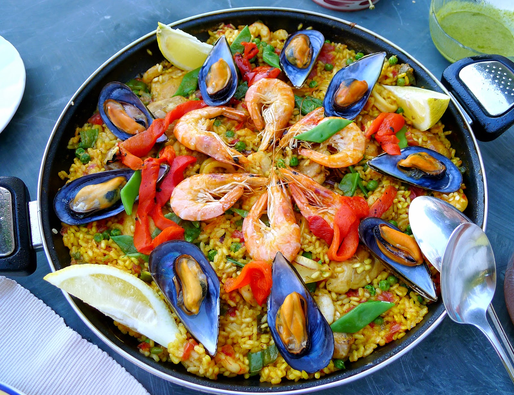
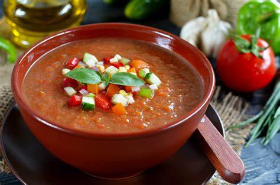

La gastronomía española es conocida por su rica variedad y sabor. Se basa en ingredientes frescos y de alta calidad, como aceite de oliva, mariscos, carnes, verduras y legumbres. Entre sus platos más emblemáticos están la paella, el gazpacho, la tortilla española, y el jamón ibérico. La cocina española también es famosa por sus tapas, pequeñas porciones de comida que se sirven como aperitivos. Cada región tiene sus propias especialidades, reflejando la diversidad cultural del país. La comida española no solo es deliciosa, sino también una parte esencial de su cultura y tradiciones
Paella: Originaria de Valencia, la paella es un plato de arroz que se cocina en una sartén grande y poco profunda. Sus ingredientes varían, pero los más comunes incluyen mariscos como gambas y mejillones, pollo, conejo, judías verdes y azafrán, que le da su característico color dorado y sabor inconfundible.

Gazpacho: Este plato es una sopa fría que se consume especialmente en verano. El gazpacho se prepara con tomates, pepinos, pimientos, cebolla, ajo, pan, aceite de oliva y vinagre. Se mezcla todo hasta obtener una textura suave y refrescante. Es muy popular en Andalucía.

Tortilla Española: También conocida como tortilla de patatas, es un clásico de la cocina española. Se elabora con huevos, patatas y cebolla (aunque esto último puede ser opcional, dependiendo de la región y los gustos). Se cocina lentamente hasta que adquiere una consistencia firme por fuera y suave por dentro.